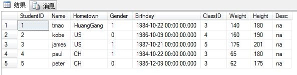
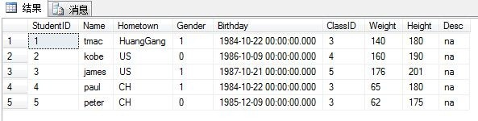

原文连接:https://www.cnblogs.com/danruoyanyun/p/11017602.html
JSON详解
JSON的全称是”JavaScript Object Notation”，意思是JavaScript对象表示法，它是一种基于文本，独立于语言的轻量级数据交换格式。XML也是一种数据交换格式，为什么没 有选择XML呢？因为XML虽然可以作为跨平台的数据交换格式，但是在JS(JavaScript的简写)中处理XML非常不方便，同时XML标记比数据 多，增加了交换产生的流量，而JSON没有附加的任何标记，在JS中可作为对象处理，所以我们更倾向于选择JSON来交换数据。这篇文章主要从以下几个方 面来说明JSON。
1，JSON的两种结构
2，认识JSON字符串
3，在JS中如何使用JSON
4，在.NET中如何使用JSON
5，总结
{
key1:value1,
key2:value2,
...
}
其中关键字是字符串，而值可以是字符串，数值，true,false,null,对象或数组
数组结构以”[”开始，”]”结束。中间由0或多个以”，”分隔的值列表组成，语法结构如代码。
[
{
key1:value1,
key2:value2
},
{
key3:value3,
key4:value4
}
]认识JSON字符串
之前我一直有个困惑，分不清普通字符串，json字符串和json对象的区别。经过一番研究终于给弄明白了。比如在js中。
字符串：这个很好解释，指使用“”双引号或’’单引号包括的字符。例如：var comStr = 'this is string';
json字符串：指的是符合json格式要求的js字符串。例如：var jsonStr = "{StudentID:'100',Name:'tmac',Hometown:'usa'}";
json对象：指符合json格式要求的js对象。例如：var jsonObj = { StudentID: "100", Name: "tmac", Hometown: "usa" };
var obj = {
1: "value1",
"2": "value2",
count: 3,
person: [ //数组结构JSON对象，可以嵌套使用
{
id: 1,
name: "张三"
},
{
id: 2,
name: "李四"
}
],
object: { //对象结构JSON对象
id: 1,
msg: "对象里的对象"
}
};1，从JSON中读数据
function ReadJSON() {
alert(obj.1); //会报语法错误，可以用alert(obj["1"]);说明数字最好不要做关键字
alert(obj.2); //同上
alert(obj.person[0].name); //或者alert(obj.person[0]["name"])
alert(obj.object.msg); //或者alert(obj.object["msg"])
}2，向JSON中写数据
比如要往JSON中增加一条数据，代码如下：

3，修改JSON中的数据
我们现在要修改JSON中count的值，代码如下：
修改后的JSON如图。

4，删除JSON中的数据
我们现在实现从JSON中删除count这条数据，代码如下：
删除后的JSON如图

可以看到count已经从JSON对象中被删除了。
5，遍历JSON对象
可以使用for…in…循环来遍历JSON对象中的数据，比如我们要遍历输出obj对象的值，代码如下：
程序输出结果为：

1，通过序列化将.net对象转换为JSON字符串
在web开发过程中，我们经常需要将从数据库中 查询到的数据(一般为一个集合，列表或数组等)转换为JSON格式字符串传回客户端，这就需要进行序列化，这里用到的是JsonConvert对象的 SerializeObject方法。其语法格式为：JsonConvert.SerializeObject(object)，代码中 的”object”就是要序列化的.net对象，序列化后返回的是json字符串。
比如，现在我们有一个TStudent的学生表，表中的字段和已有数据如图所示
 

从表中我们可以看到一共有五条数据，现在我们要从数据库中取出这些数据，然后利用JSON.Net的JsonConvert对象序列化它们为json字符串，并显示在页面上。C#代码如下
protected void Page_Load(object sender, EventArgs e)
{
using (L2SDBDataContext db = new L2SDBDataContext())
{
List<Student> studentList = new List<Student>();
var query = from s in db.TStudents
select new {
StudentID=s.StudentID,
Name=s.Name,
Hometown=s.Hometown,
Gender=s.Gender,
Brithday=s.Birthday,
ClassID=s.ClassID,
Weight=s.Weight,
Height=s.Height,
Desc=s.Desc
};
foreach (var item in query)
{
Student student = new Student { StudentID=item.StudentID,Name=item.Name,Hometown=item.Hometown,Gender=item.Gender,Brithday=item.Brithday,ClassID=item.ClassID,Weight=item.Weight,Height=item.Height,Desc=item.Desc};
studentList.Add(student);
}
lbMsg.InnerText = JsonConvert.SerializeObject(studentList);
}
}